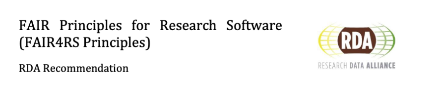

Session90 min · 57 core slides · EN 6 optional walkthroughs Lecture: CC BY 4.0 · model evidence: CC BY-NC-SA 4.0
Science
Vensim / Stella
Case 1 / Case 2
Execution
Inspection
FAIR record
Opening0 · Recap
Four lectures, one story
This fourth lecture pivots from research data to research software. Software runs, depends, versions, breaks — it needs its own playbook.
Lecture 1 · Motivation
FAIR principles, the data lifecycle, why we care about DOIs and ORCIDs.
Lecture 2 · Planning in RDMO
Writing a Software/Data Management Plan in rdmo.nfdi4ing.de.
Lecture 3 · Metadata
Describing data with Metadata4Ing, RO-Crate, controlled vocabularies.
Today (Lecture 4): the same mindset, for the code that produced the data. The community answer is FAIR4RS — FAIR Principles for Research Software.
Science
Vensim / Stella
Case 1 / Case 2
Execution
Inspection
FAIR record
Opening0 · Agenda
Agenda · 3 × theory ↔ 3 × practical
Theory blocks introduce a FAIR4RS letter; each is immediately followed by a hands-on practical on an NFDI4ING service.
Time
Block
Format
NFDI4ING service
FAIR4RS
0:00–0:10
Opening, recap & shared model
Theory
—
—
0:10–0:22
Findable & Accessible
Theory
—
F1F2F3F4A1A2
0:22–0:34
Practical 1 · Discover the hunter–prey model
Hands-on
Betty Research Engine
FA
0:34–0:46
Interoperable
Theory
—
I1I2
0:46–1:00
Practical 2 · Test interoperability
Hands-on
Jupyter Service
I
1:00–1:12
Reusable
Theory
(back-ref RDMO SMP)
R1R2R3
1:12–1:26
Practical 3 · Capture reusability via RO-Crate
Hands-on
Jupyter Service
R
1:26–1:30
Wrap-up, FAIR4RS checklist
Theory
—
—
Science
Vensim / Stella
Case 1 / Case 2
Execution
Inspection
FAIR record
Opening0 · Why FAIR4RS?
Why make research software FAIR?

Software runs — and once it runs, people depend on it. Three concrete things you gain when your code is FAIR:
① Citations & credit
A DOI makes your software citable like a paper. Citing the archived version gives authors credit. Citation tracking depends on authors, records, and indexing services.
② Reproducibility on a timescale of years
Pinned dependencies + an archived snapshot preserve the context needed to attempt the same computation years later. Reviewers, funders, and future-you all benefit.
③ Collaboration without email
A stranger can pip install your code, run an example, and open a pull request — without asking you for a zip file. Contribution ≈ free.
But software isn't "just another dataset"
Data · static
Software · dynamic
Bytes at rest
Executes — needs an environment
Linear snapshots
Depends on other moving software
Immutability is a feature
Versions at many granularities
Described by metadata, done
Rots — breaks without being touched
Hence FAIR4RS — the RDA-endorsed re-interpretation of FAIR where every letter is rewritten for things that run.
A Kaibab ecosystem model implemented in Vensim and Stella Architect. Both implementations share a scientific specification and two cases; their file formats and numerical execution differ.
Every theory slide connects a FAIR4RS concept to evidence in this repository — from the CI badge to the Zenodo release workflow and CITATION.cff.
Case-study additionVensim · Stella · Case 1 / Case 2
Shared scientific specification
The literature defines an ecosystem of deer, predators and forage. Equations, lookup functions, units and initial conditions describe the scientific problem.
The existing semantic model connects the specification to both native implementations. Open full-size image ↗
Case-study additionVensim · Stella · Case 1 / Case 2
Shared use cases, tool-specific implementations
Use case
Vensim implementation
Stella Architect implementation
Define
Equations and sketch in .mdl
Equations and views in .stmx (XML/XMILE)
View
Native view or exported HTML/SVG
Native view or exported PDF/SVG
Document / comment
Model text, variable descriptions, report
Model documentation, equations, screenshots
Edit
Vensim authoring tools
Stella Architect authoring tools
Configure
Existing .cin, CSV and workbook inputs
Parameter, lookup and historical-data CSVs
Execute
Native Vensim engine; separate PySD route
Native Stella engine; separate PySD route
Export
Source, documentation and result data
Source, documentation and result data
Science
Vensim / Stella
Case 1 / Case 2
Execution
Inspection
FAIR record
Case-study additionVensim · Stella · Case 1 / Case 2
Tool-specific artifacts and access
Artifact
What it carries
Access boundary
.mdl / .stmx
Editable model declarations; .stmx is XML/XMILE
Readable source, tool-specific semantics
CSV / HTML / SVG / PDF
Exported values or documentation
Open inspection in appropriate readers
.vpmx
Vensim packaged model
Vendor runtime; an export option, absent here
ZIP / .stmz
Stella bundled model and supporting files
Container only; an export option, absent here
Proprietary does not always mean paid: Vensim Model Reader and isee Player offer restricted viewing/runtime workflows. Compatibility with this snapshot was not newly tested.
Science
Vensim / Stella
Case 1 / Case 2
Execution
Inspection
FAIR record
Case-study additionVensim · Stella · Case 1 / Case 2
Case 1 and Case 2
Parameter
Case 1
Case 2
Annual kills per predator
40
20
Carrying-capacity horizon
2 years
4 years
Desired consumption per deer
0.75 t/(deer·year)
0.5 t/(deer·year)
Predator removal fraction
0/year
0.2/year
The outcome is not an isolated predator-removal effect.
Making software publishable and retrievable by both humans and machines.
FAIR
Science
Vensim / Stella
Case 1 / Case 2
Execution
Inspection
FAIR record
Findable & AccessibleF1 · Principle
F1 · Globally unique and persistent identifierF1F1.1F1.2
FAIR4RS · F1Software is assigned a globally unique and persistent identifier.
Every piece of software needs an ID that (a) no other object in the world shares, and (b) is maintained for persistent resolution — so humans and machines can point at it without ambiguity.
F1.1 — components at different granularities (project, release, function) each get distinct IDs.
FAIR4RS · F2 · F3 · F4F2. Software is described with rich metadata. F3. Metadata clearly and explicitly include the identifier of the software they describe. F4. Metadata are FAIR, searchable and indexable.
The metadata itself must be findable (not buried in a PDF), it must link back to the software's DOI, and it must be consumable by the registries and search engines that harvest it.
A1 · A1.1 · retrievable via a standardized protocolA1A1.1
FAIR4RS · A1 · A1.1A1. Software is retrievable by its identifier using a standardized communications protocol. A1.1. The protocol is open, free, and universally implementable.
Given the DOI or the git URL, any human or machine must be able to fetch the code over a protocol that is publicly documented, costs nothing to implement, and has at least one open-source client.
In fair-hunter-prey
git clone over HTTPS retrieves models, configurations, readers and history.
pip install installs the package and PySD execution route.
The verified Zenodo archive is retrievable over HTTPS.
Text, CSV, HTML and SVG can be inspected openly. Native editing and execution depend on the relevant vendor tool.
Standard retrieval protocols and native application access are separate questions.
Science
Vensim / Stella
Case 1 / Case 2
Execution
Inspection
FAIR record
Findable & AccessibleA1 · A1.1 · In practice
Open, free, universally implementableA1A1.1
FAIR4RS A1.1 asks: "Is the protocol open, free, and universally implementable?" For research software, the answer is almost always HTTPS + git.
retrieve fair-hunter-prey, three ways• • •
# (a) clone — full history
git clone https://github.com/FAIR-systemDynamics/fair-hunter-prey-simulation
# (b) install the exact reviewed snapshot
python -m pip install "fair-hunter-prey[teaching] @ git+https://github.com/FAIR-systemDynamics/fair-hunter-prey-simulation@v0.7.0"
# (c) archived release
# https://doi.org/10.5281/zenodo.23267769
The protocol matters
HTTPS — an IETF standard, any device, no account.
git — an open protocol with multiple interop implementations.
PyPI / conda — open registries using the same stack.
Private FTP? Proprietary portal requiring a PDF application? Not A1.1.
← Lecture 1 · DOI + ORCID
Science
Vensim / Stella
Case 1 / Case 2
Execution
Inspection
FAIR record
Findable & AccessibleA1.2 · Principle
A1.2 · auth is a feature, not a gateA1.2
FAIR4RS · A1.2The protocol allows for an authentication and authorization procedure, where necessary.
Authentication is a capability of the protocol, to be used only when the content genuinely requires it (private review, rate-limits, contribution provenance). A public repo that optionally supports OAuth is still fully A-compliant.
In fair-hunter-prey
Public model sources and saved results can be retrieved without login.
GitHub authentication supports contributions and release administration.
Zenodo connects through GitHub OAuth; the hosted Jupyter service has its own sign-in.
Vendor applications have separate access terms. Proprietary software does not always mean paid access.
Science
Vensim / Stella
Case 1 / Case 2
Execution
Inspection
FAIR record
Findable & AccessibleA1.2 · In practice
Authentication, where genuinely necessaryA1.2
What A1.2 is not
It is not an excuse to hide public research behind a login.
It is not about protecting code from reviewers.
What A1.2 is
A Personal Access Token for a private fork during peer review.
OAuth (GitHub login to Zenodo, to the Betty Engine, …) — authenticated access, not locked content.
gh auth login
gh repo clone OWNER/PRIVATE-REPOSITORY
# CI: use the workflow-scoped GITHUB_TOKEN
# for GitHub operations; OIDC for supported
# external cloud identity federation.
Practical 1 uses OAuth to log into the Betty Research Engine via GitHub — you will see A1.2 in action.
Science
Vensim / Stella
Case 1 / Case 2
Execution
Inspection
FAIR record
Findable & AccessibleA2 · Principle
A2 · metadata outlives the softwareA2
FAIR4RS · A2Metadata are accessible, even when the software is no longer available.
Software rots. Hosts go bankrupt. Dependencies disappear. But the record that the software existed — who wrote it, what it did, what it depended on — must stay resolvable, so citations and reproducibility claims don't silently break.
In fair-hunter-prey
Archive a reviewed source snapshot with authors, licenses and environment information.
Preserve citation metadata even if future native software access changes.
Check Zenodo deposit and Software Heritage ingestion separately; record only observed identifiers.
Keep the original saved results inspectable alongside the model sources.
A2: if the software disappears, the metadata should remain accessible. Two instruments do the heavy lifting.
Zenodo
Immutable deposit of the code snapshot + its metadata record. Backed by CERN; long-term preservation policy.
Software Heritage
Inria-led universal source-code archive. Archives software from many supported origins; verify ingestion for the specific repository. Gives every file a SWHID — content-addressed identifiers.
A citation that includes a DOI + SWHID is the gold standard: one for people, one for content-addressed preservation.
Science
Vensim / Stella
Case 1 / Case 2
Execution
Inspection
FAIR record
Findable & AccessibleRecap
F + A · the minimum viable artefacts
F · Findable
DOI (concept + version), rich machine-readable metadata, indexed by a registry.
A · Accessible
HTTPS + git or a registry, auth only where strictly necessary, archive for persistence.
Your repo today has
CITATION.cff, codemeta.json, environment locks and preserved examples. The archived release has verified concept and version DOIs.
Bring to Practical 1
FAIR metadata helps search engines describe and index software. Next: step into the shoes of a consumer. What does Betty actually find, and what evidence can you inspect directly?
Science
Vensim / Stella
Case 1 / Case 2
Execution
Inspection
FAIR record
02
Practical 1 · Discover research software
Experience findability from the consumer side — search, sort, export, inspect.
Search for fair-hunter-prey-simulation, then system dynamics.
Inspect the search sources. Use GitHub search or sign-in where the service offers them.
Sort by citations if available. Record the result source and missing fields.
Export the result set as JSON if available; record the query and date.
Find this repository, or record the indexing gap and follow the direct GitHub link.
Inspect authors, version, license and citation metadata. Follow the literature, both implementations, and Case 1/2 inputs.
Follow the Zenodo publication evidence. Does a citation count measure scientific quality or only observed citations?
Science
Vensim / Stella
Case 1 / Case 2
Execution
Inspection
FAIR record
Practical 1 · DiscoverReflection · 2 min
What made the hunter–prey model findable?
Prompt: Which fields did Betty expose? Which came from GitHub or Zenodo? Which were absent? Compare what the repository declares with what the search service actually indexed.
Title & authors
From CITATION.cff — ORCIDs make authorship machine-resolvable.
License & version
SPDX identifiers and release versions describe reuse conditions and the source snapshot.
Citation count
A citation count depends on the index and the citing records it has collected.
Takeaway
Rich metadata improves discoverability and interpretation. Missing search results are indexing evidence, not a verdict on the model. Follow direct references when a new repository is not yet indexed.
Science
Vensim / Stella
Case 1 / Case 2
Execution
Inspection
FAIR record
03
Interoperable research software
Software that talks to other software — open formats, qualified references, shared vocabularies.
FAIR
Science
Vensim / Stella
Case 1 / Case 2
Execution
Inspection
FAIR record
InteroperableI1 · Principle
I1 · read, write, exchange via community standardsI1
FAIR4RS · I1Software reads, writes and exchanges data in a way that meets domain-relevant community standards.
If two independent pieces of software want to talk, they need shared formats (HDF5, NetCDF, CSV+schema) and shared vocabularies. Where APIs are involved, they should be documented with open specs (OpenAPI, AsyncAPI).
In fair-hunter-prey
Model sources: text-based Vensim .mdl; XML/XMILE in Stella .stmx.
Inputs: existing .cin, CSV and workbook files; shared scientific quantities, different representations.
Results: CSV readers preserve headers, units and independent time axes before pandas/Matplotlib analysis.
Execution: PySD translates copies of either implementation using the existing compatibility adapters.
An OpenAPI service remains an illustrative option, shown next.
Science
Vensim / Stella
Case 1 / Case 2
Execution
Inspection
FAIR record
InteroperableI1 · In practice
Open formats > bespoke filesI1
Scenario
Bespoke
Interop-friendly
Why it matters
Simulation output
results.bin (custom)
results.h5 (HDF5) or .nc (NetCDF)
Every language has a reader; chunked & self-describing.
Tabular data
Excel with merged cells
CSV + a data dictionary
Parseable by any tool; diff-friendly under version control.
I1 heuristic:"If my format has a specification I can link to, and multiple implementations read it, it's interop-grade." Here: Vensim trajectories and historical data can have different time axes. Stella Case 2 contains final values only. A CSV extension alone does not define these semantics.
Clients validate requests before they hit your service.
An OpenAPI spec is itself a machine-readable, qualified reference — it's I1 + I2 in a single file.
Illustrative design; no HTTP service is implemented. A response must distinguish trajectory and final-values. The working interfaces are the Python API, CLI and CSV readers.
Science
Vensim / Stella
Case 1 / Case 2
Execution
Inspection
FAIR record
InteroperableI2 · Principle
I2 · qualified references to other objectsI2
FAIR4RS · I2Software includes qualified references to other objects.
Every external thing the software mentions — an author, a licence, a dataset, an instrument, a vocabulary term — should be referenced through a resolvable identifier from a maintained authority, not a free-text string.
I2 vs R2. I2 covers references to anything other than software. R2 (later) is the twin principle for references to other software.
"I depend on pandas." But which version? Today's? Next year's? If pandas 3.0 breaks my code and someone installs it, whose fault is it?
Qualified dependency
✓ specific• • •
dependencies = ["pandas>=2.2,<3"]
"I depend on pandas, specifically in this API-stable range." That declares the supported range. A machine can check it. A future reuser knows the constraint.
This is R2 because
It's a reference → Points to something external (pandas package on PyPI)
It's qualified → With precise version constraints
It's from a maintained authority → PyPI hosts pandas; the version numbers are real and resolvable
Trade-offs: GitHub is immediate & automatic (an installable commit can be pinned); PyPI is discoverable & cached globally. Both are R2: qualified references to a maintained repository.
Complete pyproject.toml · Both native implementations are bundled without reorganizing the scientific source tree.
Science
Vensim / Stella
Case 1 / Case 2
Execution
Inspection
FAIR record
04
Practical 2 · Test interoperability
Can you actually run a stranger's software — and does it break when dependencies change?
FAIR
Science
Vensim / Stella
Case 1 / Case 2
Execution
Inspection
FAIR record
Practical 2 · Test interoperability14 min · hands-on
Open 02_interoperability.ipynb. First inspect saved CSV exports with the unchanged readers, pandas and Matplotlib. This performs no simulation.
Run both implementations and both cases through PySD. Compare each with its own reference, preserving numerical methods and tolerances.
Inspect package versions. Explain what an absent dependency constraint or a misread final-values export could break. Do not modify the original research inputs.
Notebook · inspect exports, then execute with PySDPython 3.12 / 3.13
from fair_hunter_prey import inspect_results, run_example
inspect_results("out/inspection") # saved exports only
for implementation in ("vensim", "stella"):
for case in ("case1", "case2"):
run_example(implementation, case,
f"out/{implementation}-{case}")
Science
Vensim / Stella
Case 1 / Case 2
Execution
Inspection
FAIR record
Practical 2 · Test interoperabilityReflection · 2 min
Why R2 (qualified dependencies) matters
Prompt: You ran code written by someone else, in an environment you don't control. What made that possible? What would have broken it?
Pinned versions
The repo specifies pandas>=2.2,<3. That's R2: a qualified, maintained reference to another software package.
Standard package format
pyproject.toml is PEP 621. Every tool reads it the same way. No ambiguity.
Open protocol
pip install via GitHub uses standard tools on supported platforms. The Python route is independent; native authoring still uses vendor tools.
Takeaway
Interoperability is not magic. It's: standards + constraints + open protocols.
Inspecting a CSV and executing a model are different activities. Stella Case 2’s native export contains final values only; a new PySD trajectory is new execution evidence.
Science
Vensim / Stella
Case 1 / Case 2
Execution
Inspection
FAIR record
05
Reusable research software
Understandable, modifiable, sustainable. The biggest block in spirit — we triage to the highest-leverage artefacts.
FAIR4RS · R1 · R1.1 · R1.2R1. Software is described with a plurality of accurate and relevant attributes. R1.1. Software is given a clear and accessible license. R1.2. Software is associated with detailed provenance.
A reuser needs enough labels to evaluate the software before cloning it — what it does, how it's licensed (R1.1 · machine-readable SPDX), and the story of who built it and why (R1.2 · who, when, what changed).
Here:REUSE maps each file to MIT, CC BY 4.0, or the inherited CC BY-NC-SA 4.0 model license. Vensim and Stella retain their own proprietary terms.
You want…
Good default
Max adoption
MIT or Apache-2.0
Improvements returned
GPL-3.0-or-later
Server-side reciprocity
AGPL-3.0-only
Scientific paper figures
CC-BY-4.0 (data/prose, not code)
No LICENSE file = all rights reserved. Public visibility alone grants no general reuse license; applicable permissions and exceptions still matter.
Science
Vensim / Stella
Case 1 / Case 2
Execution
Inspection
FAIR record
ReusableR1.2 · Provenance
Who · what · when · why — for freeR1.2
git log · fair-hunter-preyprovenance
207ca01 fix: identify PySD explicitly in execution output and logs
2648c8c docs: record FAIR verification and presentation review evidence
fd82aa2 ci: install the teaching package before the full existing test suite
eaa529e feat: add FAIR4RS lecture and reproducible hunter-prey workflows
# Earlier teaching milestones remain intact.
Descriptive commit messages support a changelog draft; the changelog records the curated story.
CHANGELOG.mdKeep-a-Changelog
# Abridged; read the complete changelog below
## [0.7.0] — 2026-10-09
### Added
- Both implementations and both cases via PySD.
- Saved-export inspection and RO-Crate examples.
- FAIR4RS lecture and evidence map.
### Changed
- Restore all 52 reference lessons and styling.
### Preserved
- Models, configurations, readers and tolerances.
FAIR4RS · R2Software includes qualified references to other software.
Every dependency your code needs to compile or run must be referenced through an authoritative source — name + version range + registry — not a loose "depends on NumPy". The reference itself should resolve to the qualifying authority.
R2 vs I2. I2 is about refs to anything other than software; R2 is specifically the software case.
In fair-hunter-prey
pysd==3.14.3 — translation and simulation with documented feature limits.
Native Vensim and Stella are separate software dependencies for native authoring/execution.
Package outputs identify PySD and the existing compatibility adapters.
Science
Vensim / Stella
Case 1 / Case 2
Execution
Inspection
FAIR record
ReusableR2 · In practice
Pin the whole world, not just the codeR2
Weakest · declare
pyproject.toml, requirements.txt with version ranges. Declares the supported dependency contract.
Stronger · pin
poetry.lock, uv.lock, conda env export — every transitive dep at a concrete version. Here: teaching-py312.txt and teaching-py313.txt.
Strongest · contain
Dockerfile / apptainer.def + image pushed to GHCR. Records additional OS/runtime layers when actually built and identified. No container image is published here.
Dockerfile · reuse-gradeOCI
# Illustrative Dockerfile; not a published image
FROM python:3.13-slim
# For a frozen build, record a verified base-image digest.
COPY dist/fair_hunter_prey-0.7.0-py3-none-any.whl /tmp/
RUN pip install /tmp/*.whl
ENTRYPOINT ["fair-hunter-prey"]
Science
Vensim / Stella
Case 1 / Case 2
Execution
Inspection
FAIR record
ReusableR3 · Principle
R3 · meet domain-relevant community standardsR3
FAIR4RS · R3Software meets domain-relevant community standards.
Use the packaging, testing, documentation, and distribution conventions of your language / community. Skipping them — even with otherwise beautiful code — makes reuse needlessly hard and signals "experimental" to reviewers.
In fair-hunter-prey
Packaging: PEP 621 pyproject.toml and an installed-package check.
Citation: CFF and CodeMeta with verified creators and references.
Tests: existing scientific tests plus four implementation/case combinations.
CI: Python 3.12 and 3.13; unchanged reference tolerances.
Licensing: REUSE and SPDX, preserving the inherited model terms.
Science
Vensim / Stella
Case 1 / Case 2
Execution
Inspection
FAIR record
ReusableR3 · In practice
Let CI answer "does it still run?"R3
Distribute where your community looks
PyPI / conda-forge — Python.
CRAN — R.
CPAN, Julia General, Rust crates.io, …
Otherwise: a tagged GitHub release + a DOI remains installable for years.
name: FAIR teaching verification
on: [push, pull_request]
jobs:
verify:
strategy:
matrix: {python: ["3.12", "3.13"]}
runs-on: ubuntu-latest
steps:
# checkout and locked environment setup
- run: python -m pytest -q
- run: python tools/fair/check_stella.py
- run: python tools/fair/check_materials.py
- run: python tools/fair/execute_notebooks.py
# build and test wheel outside the checkout
A green badge on the README > two paragraphs of installation docs.
Science
Vensim / Stella
Case 1 / Case 2
Execution
Inspection
FAIR record
ReusableSustainability
Write the sustainability plan before the code rots
Reusability two years in is not an artefact — it's a policy. Who keeps the tests green? Which Python version stays supported? What triggers a new Zenodo deposit?
The community answer is the Software Management Plan (SMP) — the software cousin of the DMP we wrote in Lecture 2.
← Lecture 2 · RDMO SMP catalogue
RDMO SMP — what it captures
Roles · maintainer, reviewer, release manager. Versioning · semver + cadence. Archival · Zenodo + Software Heritage. Support · issue SLA, EoL policy. Deprecation · how & when code is retired.
This repository’s release checklist records the process. Maintainer responsibilities and support promises must be agreed with the collaborators.
Science
Vensim / Stella
Case 1 / Case 2
Execution
Inspection
FAIR record
ReusableRecap
R · the smallest thing that could break you
Bring to Practical 3
You have inspected saved exports and run an implementation in a fresh Python environment. Now package its source, selected case, actual outputs, licenses and environment together.
In a disposable copy of the crate, change an output or remove an input. Re-run the hash check and explain why it fails. Discuss how missing licenses and unconstrained dependencies would obstruct reuse.
Science
Vensim / Stella
Case 1 / Case 2
Execution
Inspection
FAIR record
ReusableRO-Crate · Concept
RO-Crate · research object in one containerR
What is an RO-Crate?
A standardized, portable directory structure that bundles:
All wrapped in a machine-readable manifest: ro-crate-metadata.json (JSON-LD).
Why you need it
Reproducibility
The crate collects the available context needed to attempt regeneration years later. Not scattered across GitHub, Zenodo, supplementary materials, and lost emails.
Portability
Inspect the same standard crate across tools. Execution still requires compatible software and dependencies. This practical uses Jupyter.
Preservation
Deposit a research-object archive in a suitable repository such as Zenodo; verify source-code archiving separately. Future tools understand RO-Crate structure — your work isn't locked into one archive format.
Science
Vensim / Stella
Case 1 / Case 2
Execution
Inspection
FAIR record
06
Practical 3 · Capture reusability via RO-Crate
Package your entire research object — code, data, metadata, environment, provenance — for reproducibility across time and tools.
The adapter uses rocrate to describe files, authors and provenance.
Science
Vensim / Stella
Case 1 / Case 2
Execution
Inspection
FAIR record
Practical 3 · RO-CrateReflection · 2 min
The R in FAIR4RS · Reusability across time
Prompt: An RO-Crate captures your code, data, metadata, and environment together. Why does this matter for the future? What could break if you didn't package it this way?
Reproducibility
This crate records the observed execution context: code version, deps, data, env. Identify what was actually run and assess future execution requirements.
Provenance
Metadata (author ORCID, license, citations) travels with the code. Credit is preserved.
Portability
Standard format, many tools understand it. Not locked into one platform or archive.
Takeaway
R (Reusable) means: preserving the context needed for future reuse. RO-Crate is the container.
Science
Vensim / Stella
Case 1 / Case 2
Execution
Inspection
FAIR record
Wrap-upFAIR4RS · printable
The FAIR4RS checklist — one page
F
Findable
Concept + version DOI on Zenodo
CITATION.cff at root
codemeta.json JSON-LD
Check actual indexing in a registry or discovery service
A
Accessible
Installable: pip install via GitHub or PyPI
pyproject.toml with PEP 621 metadata
HTTPS + git (open protocols, no login walls)
Verify Zenodo deposit and Software Heritage ingestion